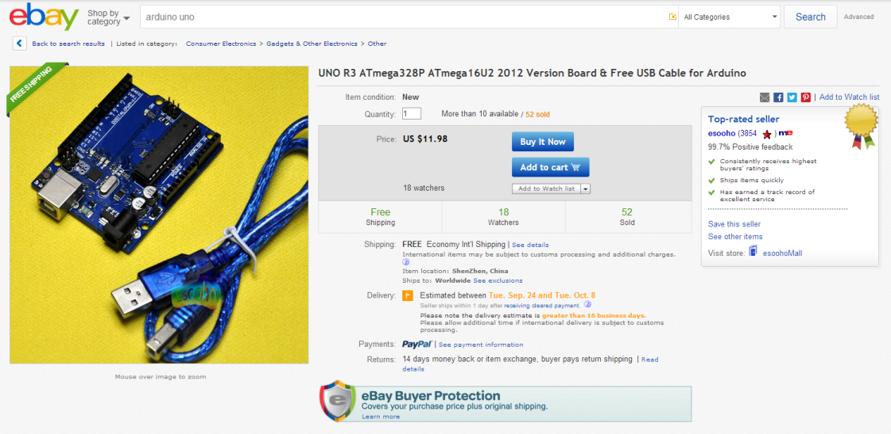
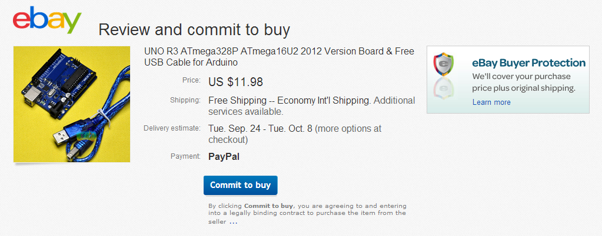

Честно говоря, меня всегда удручают посты, связанные с поделками на основе Arduino, а вернее, та их часть, где обсуждается, где приобрести сами платы Arduino и различные компоненты к ним — датчики, шилды, и прочие девайсы. Цена на Arduino UNO в российских интернет-магазинах (я не буду здесь их называть, если вы интересуетесь Arduino, то многие из них вы уже знаете) составляет в среднем $36, но вы удивитесь, что можно её купить за $12. Мелкие датчики, которые продают по $10..$15, можно купить за $1..$5. Где же такая «халява»? Ответ простой: eBay.
Данная статья будет интересна в первую очередь, начинающим — профессионалы вряд ли найдут в ней много полезного. Её также можно рассматривать как краткое руководство по покупкам на eBay, и хотя я буду рассматривать примеры заказа Arduino и компонентов к нему, это также применимо и к любым другим товарам. У меня уже более 500 покупок на eBay, поэтому могу назвать себя опытным «ибеером».
eBay для простого русского человека в последнее время не является диковинкой — многие из нас им пользуются. Раньше с ним было сложно работать, приходилось пользоваться услугами посредников, которые получали сначала посылки на свой адрес в США, а потом отправляли в Россию, Украину и другие пост-советские страны за определенную плату. Забудьте про посредников. Мы будем заказывать в Китае, а они отправляют посылки почти в любую страну.
Что нам понадобится?
Нам обязательно понадобится аккаунт PayPal. Большинство продавцов на eBay работают только с ним (во всяком случае, я пока не встречал других вариантов оплаты). К счастью, регистрация и добавление карты для оплаты не отнимет у вас больше 10 минут. Для верификации аккаунта и оплаты понадобится кредитная или дебетовая карта любого банка, по которой можно совершать платежи в интернет — обязательно уточните у менеджера вашего банка, подходит ли ваша карта для этого. Обязательно укажите в качестве адреса доставки ваш точный адрес (латиницей!), некоторые продавцы используют его (а не адрес доставки, указанный в профайле на eBay).
Покупки на eBay
Необходимо вооружиться знанием английского языка (или хотя бы гугл-переводчиком). Все продавцы на eBay используют английский в качестве основного языка общения. Регистрируем аккаунт на eBay, и обязательно заполняем адрес доставки (он должен соответствовать адресу доставки в PayPal, тогда проблем не возникнет вообще).
Теперь самое интересное — поиск и заказ нужного нам товара. Например: "arduino uno". Также, необходимо указать в параметрах поиска в левом меню: Buy it now, и Free shipping. Первый фильтр скроет аукционы и сэкономит нам уйму времени (хотя на аукционе можно купить Arduino ещё на $1-$2 дешевле, но мне просто жаль тратить на это время). Второй фильтр будет показывать только товары с бесплатной доставкой — а это нам и нужно, т.к стоимость доставки у некоторых продавцов может в десятки раз превышать стоимость самого товара. Обязательно проверяйте стоимость доставки перед покупкой — я когда-то по недосмотру заказал какой-то датчик к Arduino, который стоил $1.99, а доставка стоила $35.
Теперь переходим к самому товару. Мы видим, что цена этой платы — $11.98, доставка бесплатная (Shipping: Free economy Intl shipping) — вернее, стоимость доставки уже включена в стоимость товара (в Китае почтовая доставка настолько дешёвая, что очень часто включается в стоимость товара). Как правило, для некрупных товаров можно всегда найти бесплатную доставку.

Далее, обязательно обратите внимание на рейтинг продавца. В данном случае он 99.7% при 3854 проданных товаров, это очень хорошо. Top-rated seller — продавец с очень хорошей репутацией. Я рекомендую заказывать у тех продавцов, чей рейтинг не меньше 99% — в этом случае проблем с доставкой не возникнет. Продавцы заботятся о репутации (в конце-концов, от этого напрямую зависит их бизнес), поэтому если возникают какие-либо проблемы, то их можно решить, списавшись с продавцом через внутреннюю почту eBay.
Жмём Buy it now (или Add to cart, если вы хотите купить ещё и другие товары и оплатить их все сразу). После этого необходимо проверить детали заказа:

Убеждаемся, что стоимость товара нас устраивает ($11.98), что доставка бесплатна (FREE), и нажимаем Commit to buy. Это своеобразная точка невозврата — с этого момента отменить покупку нельзя, и по правилам eBay, вы обязуетесь её оплатить. Можно конечно, и не оплачивать, но в этом случае вы заработаете минус в карму на eBay (что может негативно сказаться при последующих заказах). По правде говоря, ошибочную покупку можно отменить — нужно написать продавцу по внутренней почте и объяснить, что вы случайно сделали заказ, не посмотрев (к примеру) на стоимость доставки — чаще всего, продавец отменит покупку без каких-либо последствий.
После заказа, вас перекинет на сайт PayPal, где необходимо ввести свой емейл и пароль от PayPal, и подтвердить оплату.
Что дальше?
А дальше нужно просто ждать, пока придёт посылка. К недостаткам покупки на eBay можно отнести достаточно длительное время доставки (в среднем — от 2 недель до месяца, а иногда и больше). Как показала практика, в этом виноваты наши родные таможня и почта (из Китая посылки отправляются достаточно быстро — 1-3 дня). Извещение о бандероли вам бросят в почтовый ящик (хотя иногда туда кладут и сам конверт с покупкой — у меня такое было несколько раз). Поэтому позаботьтесь, чтобы почтовый ящик у вас по крайней мере был, а ещё лучше — запирался на ключ. С извещением идём в своё отделение почты и получаем бандерольку. После этого желательно отписать положительный отзыв на eBay и поставить продавцу рейтинг «5 звёзд». Дальше просто радуемся покупке.
Китайские братья очевидно, знают особенности нашей почты, поэтому посылки приходят упакованными на совесть. На днях получил датчик расстояния HC-SR04, упакованный в коробку, которая раз в 100 превышала по размеру сам датчик (всё остальное место занимал уплотнитель). Также, не ищите в посылке описания и документацию — к счастью, это всегда можно найти в большом количестве в интернете. В качестве бесплатного бонуса вы получаете большое количество пузырчатой упаковки, которую можно использовать для релаксации :-)
Возврат товара
Случаи, когда полученный вами девайс оказывается нерабочим, к сожалению, бывают. Хотя это и редкое явление (у меня из более чем 500 покупок, количество бракованных — около 5, т.е 1%) — почти всегда товар можно вернуть и либо заменить на аналогичный, но рабочий, либо попросить продавца вернуть вам деньги. В большинстве случаев, деньги вам вернут, т.к продавцы не хотят негативных отзывов. Отправка товара всегда происходит за счёт покупателя. Я однажды возвращал продавцу неработающее зарядное устройство для телефона HTC Desire HD, это стоило $7, как раз столько же, сколько сама покупка. Продавец выслал замену (при этом заверив меня, что новое устройство было проверено) — и оно действительно оказалось рабочим.
Но это же Китай?
Времена, когда «китайский» означало «некачественный», давно прошли. Иногда, получив очередной девайс, понимаешь: у нас просто нет такого производства, которое позволяет делать настолько высокотехнологичную электронику. Да и ваш ноутбук или «Айфон» тоже сделаны в Китае.
Датчики, и прочие девайсы
Самый ценный совет — экспериментируйте с поиском. На eBay купить можно всё (при условии, что это существует в реальном мире). Вот несколько ссылок для старта:
"arduino sensor" — всевозможные датчики для Arduino (по возрастанию цены).
"arduino relay" — модули реле.
"arduino shield" — всякие шилды — ethernet, wifi, экраны, и т.д.
"arduino lcd" — всевозможные LCD экраны.
"arduino ethernet" — ethernet шилды к Arduino.
"sainsmart" — SainSmart — основной производитель плат — клонов Arduino, и различных девайсов к нему.
Ссылки на магазины
Секрет успешных покупок на eBay — покупать у проверенных продавцов, таким образом, можно минимизировать количество недоставленного или бракованного товара. К тому же, для постоянного покупателя как правило, никогда не бывает проблем с возвратом денег (в случае чего). Вот несколько ссылок на продавцов, у которых я уже заказывал много раз.
TxHang Electronic — огромное количество различных датчиков и шилдов для Arduino, а также тестового оборудования. Всё очень качественное, ни одного возврата.
Chip Partner — ещё один хороший магазин с теми же свойствами, что и предыдущий.
TomTop — много интересной электроники, измерительные приборы, батареи и аккумуляторы.
Интересные компоненты
Arduino UNO, вернее — его китайский клон. Самое то для начинающих — средняя цена $13.
Arduino Nano — по характеристикам аналогична Arduino UNO, но гораздо более компактная ($8).
Датчик температуры и влажности DHT11 и его «старший брат» DHT22 — второй более точный и позволяет измерять более широкий диапазон температур ($1.5).
Ультразвуковой дальномер HC-SR04 ($1.6).
Микро сервопривод TowerPro SG90 — он действительно очень маленький — весит всего 9 грамм ($2.5).
Arduino Sensor Shield v5 — удобная плата для подключения датчиков и других устройств. Рекомендуется начинающим, хотя её наличие не является обязательным ($4).
LCD экран 20x4 (4 строки по 20 символов). Кириллица в них отсутствует, если нужна кириллица — посмотрите в сторону экранов МЭЛТ. Я рекомендую взять также плату последовательного интерфейса IIC/I2C/TWI/SPI — можно и без неё, но тогда на Arduino будут задействованы 10 выводов, а с ней — всего 2.
Я планирую цикл статей для начинающих про Arduino: обзоры различных компонентов, схемы подключения, скетчи. У меня сейчас в наличии более 30 разных девайсов — так что будет о чём писать. Также, я занимаюсь разработкой систем домашней автоматизации, основанных на Arduino (так называемый «Умный дом», и ещё у меня есть проект — «Умная дача»).
С радостью отвечу на ваши вопросы в комментариях. Конструктивная критика и уточнения также приветствуются. Ну а вам желаю творческих успехов и интересных экспериментов.